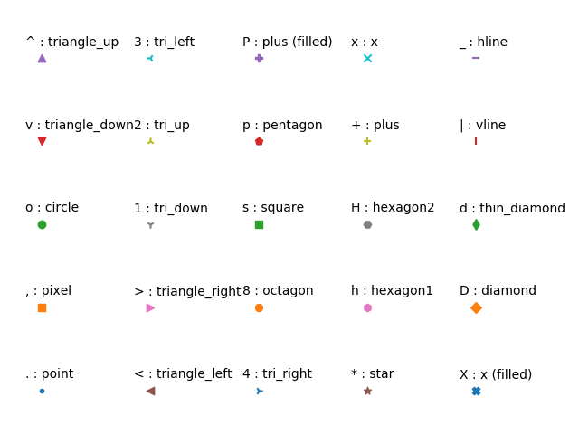
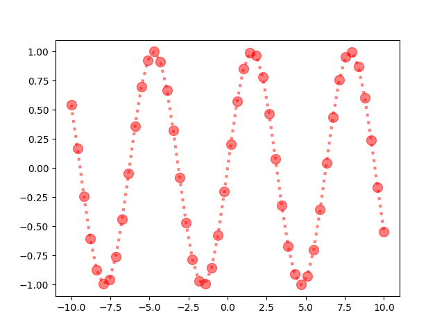
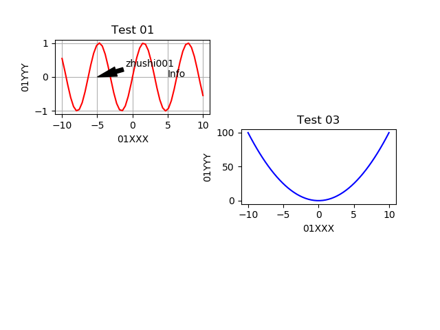

python 中有很多画图库，基本上都是用 matplotlib 进行封装
# matplotlib
import numpy as np
import matplotlib as mpl
import matplotlib.pyplot as plt
// 查看matplotlib包所在位置
print(mpl.__file__)
// 输出: /usr/local/lib64/python3.6/site-packages/matplotlib/__init__.py
plt.plot([1, 2, 3, 4, 5], [1, 4, 9, 16, 25], "-.", color="r")
#plt.plot([1, 2, 3, 4, 5], [1, 4, 9, 16, 25], linestyle="-.", color="r")
plt.xlabel("xlabel", fontsize=16)
plt.ylabel("ylabel")
plt.show()
#plt.savefig("matplotlib/test01.png")
# 线条
# 线条形状
更多线条参考 reference:
https://matplotlib.org/tutorials/index.html
https://matplotlib.org/tutorials/introductory/sample_plots.html
https://matplotlib.org/tutorials/introductory/pyplot.html
https://matplotlib.org/api/_as_gen/matplotlib.lines.Line2D.html#matplotlib.lines.Line2D.set_linestyle
https://matplotlib.org/examples/pylab_examples/multicolored_line.html
| 字符 | 类型 | |
|---|---|---|
| '-' or 'solid' | 实线 solid hline | |
| '_' | 横线点 | |
| ' | ' | vline |
| '+' | plus | |
| '--' or 'dashed' | 虚线 dashed line | |
| '-.' or 'dashdot' | 虚点线 dash-dotted line | |
| ':' or 'dotted' | 点线 dotted line | |
| 'None' or ' ' or '' | draw nothing | |
| '.' | 点 | |
| ',' | 像素点 | |
| 'o' | 圆点 | |
| 's' | 正方点 | |
| 'p' | 五角点 | |
| '*' | star | |
| 'h' | 六边形点 1 | |
| 'H' | 六边形点 2 | |
| 'D' | 实心菱形点 | |
| 'd' | 瘦菱形点 | |
| 'x' | filled | |
| 'v' | 下三角点 | |
| '^' | 上三角点 | |
| '<' | 左三角点 | |
| '>' | 右三角点 | |
| '1' | 下三叉点 | |
| '2' | 上三叉点 | |
| '3' | 左三叉点 | |
| '4' | 右三叉点 |
import matplotlib.pylab as plt
markers = [
'.', ',', 'o', 'v', '^', '<', '>', '1', '2', '3', '4', '8', 's', 'p', 'P',
'*', 'h', 'H', '+', 'x', 'X', 'D', 'd', '|', '_'
]
descriptions = [
'point', 'pixel', 'circle', 'triangle_down', 'triangle_up',
'triangle_left', 'triangle_right', 'tri_down', 'tri_up', 'tri_left',
'tri_right', 'octagon', 'square', 'pentagon', 'plus (filled)', 'star',
'hexagon1', 'hexagon2', 'plus', 'x', 'x (filled)', 'diamond',
'thin_diamond', 'vline', 'hline'
]
x = []
y = []
for i in range(5):
for j in range(5):
x.append(i)
y.append(j)
plt.figure()
for i, j, m, l in zip(x, y, markers, descriptions):
plt.scatter(i, j, marker=m)
plt.text(i - 0.15, j + 0.15, s=m + ' : ' + l)
plt.axis([-0.1, 4.8, -0.1, 4.5])
plt.tight_layout()
plt.axis('off')
plt.show()

# 线条颜色
reference:
https://matplotlib.org/tutorials/index.html#colors
// 线条与颜色分开写
plt.plot([1, 2, 3, 4, 5], [1, 4, 9, 16, 25], "-.", color="r")
// 线条与颜色连在一块写
plt.plot([1, 2, 3, 4, 5], [1, 4, 9, 16, 25], "r-.")
# 绘制多条线
plt.plot(tang_numpy, tang_numpy, "r--")
plt.plot(tang_numpy, tang_numpy**2, "bs")
// 上面两行等同于以下一行python代码
plt.plot(tang_numpy, tang_numpy, "r--", tang_numpy, tang_numpy**2, "bs")
指定线条宽度，关键点标志
x = np.linspace(-10, 10)
y = np.sin(x)
plt.plot(x,
y,
linestyle=":",
linewidth=3.0,
marker="o", # 指定x轴值所在位置标志图形
markerfacecolor="r", # 标志颜色
markersize=10, # 标志大小
alpha=0.5) # 透明程度
plt.savefig("matplotlib/line01.png")
plt.show()
先画图，再设置参数
x = np.linspace(-10, 10)
y = np.sin(x)
line = plt.plot(x, y)
plt.setp(line,
color="r",
linestyle=":",
linewidth=3.0,
marker="o",
markerfacecolor="r",
markersize=10,
alpha=0.5)
plt.savefig("matplotlib/line01.png")
plt.show()

# 子图

import numpy as np
import matplotlib as mpl
import matplotlib.pylab as plt
tang_numpy = np.arange(0, 10, 0.5)
plt.plot(tang_numpy, tang_numpy, "r--")
plt.plot(tang_numpy, tang_numpy**2, "bs")
# 上面两行等价于下面一行
#plt.plot(tang_numpy, tang_numpy, "r--", tang_numpy, tang_numpy**2, "bs")
plt.show()
#====================================================================================
x = np.linspace(-10, 10)
y = np.sin(x)
line = plt.plot(x, y)
plt.setp(line,
color="r",
linestyle=":",
linewidth=3.0,
marker="o",
markerfacecolor="r",
markersize=10,
alpha=0.5)
plt.savefig("matplotlib/line01.png")
plt.show()
#====================================================================================
x = np.linspace(-10, 10)
y = np.sin(x)
# 211 表示一会要画的图是3行2列的，最后一个1表示子图当中第1个图
plt.subplot(321)
plt.plot(x, y, color="r")
plt.xlabel("01XXX")
plt.ylabel("01YYY")
plt.title("Test 01")
# 在图中坐标(5, 0)处添加信息
plt.text(5, 0, "Info")
# 添加注释箭头
plt.annotate(
"zhushi001",
xy=(-5, 0),
xytext=(-1, 0.3),
arrowprops=dict(
facecolor="black", # 箭头颜色
shrink=0.01, # 箭头大小
headlength=20, # 箭头长度
headwidth=10)) # 箭头宽度
# 添加格子
plt.grid(True)
plt.subplot(324)
plt.plot(x, x**2, color="b")
plt.xlabel("01XXX")
plt.ylabel("01YYY")
plt.title("Test 03")
plt.savefig("matplotlib\matplotlib.png")
plt.show()